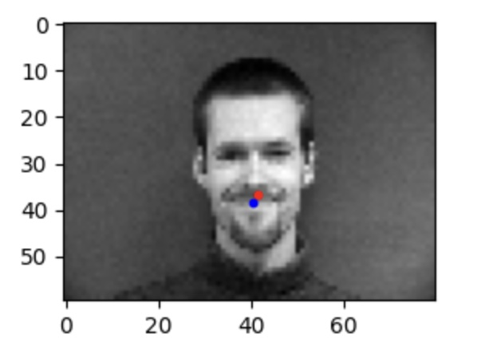
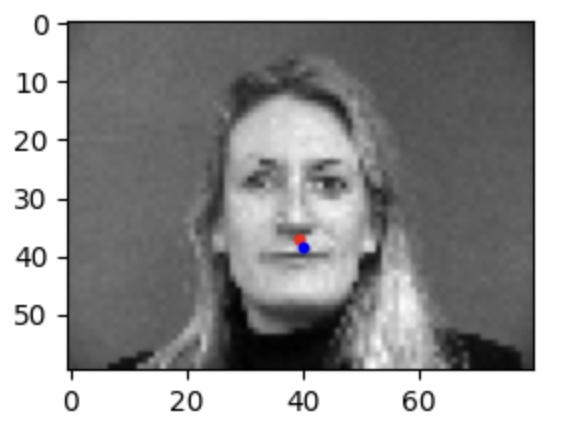
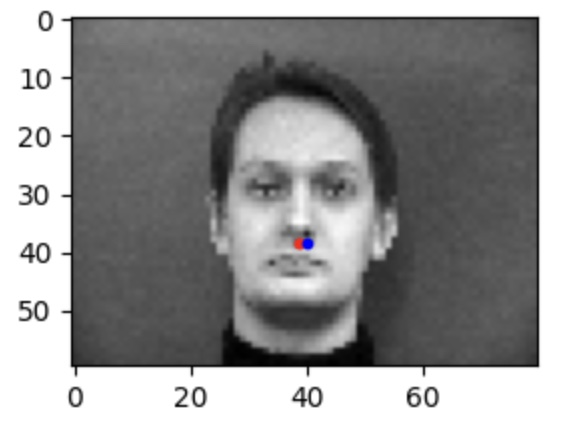
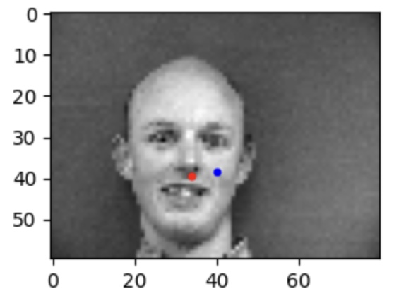
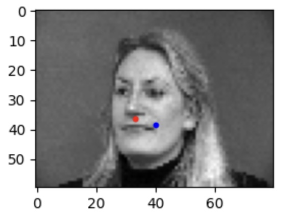
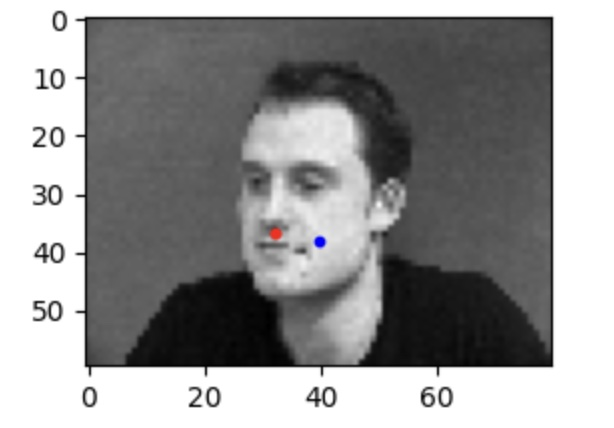
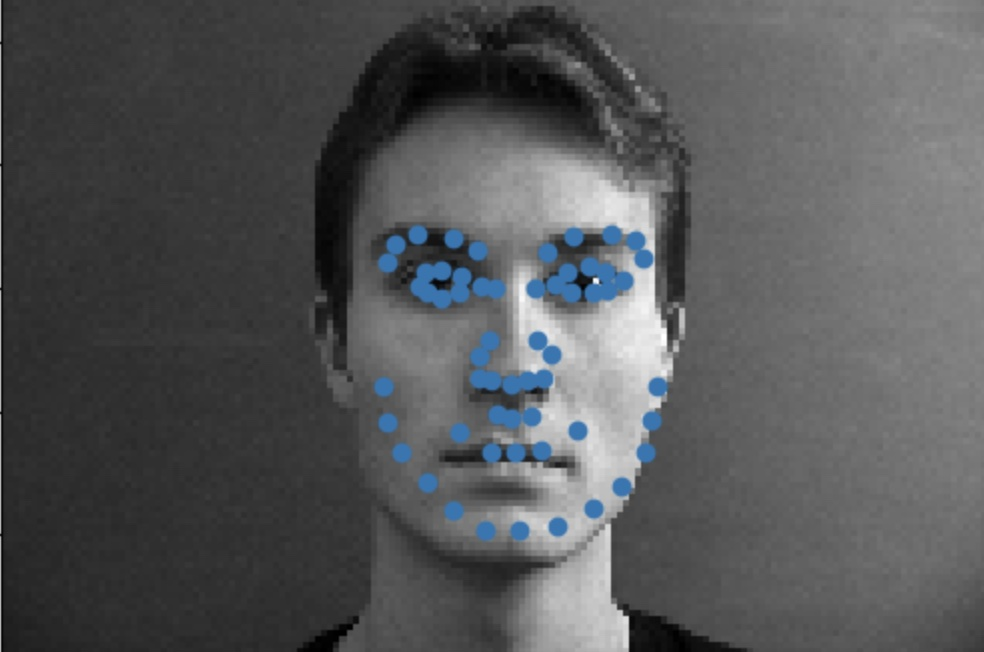
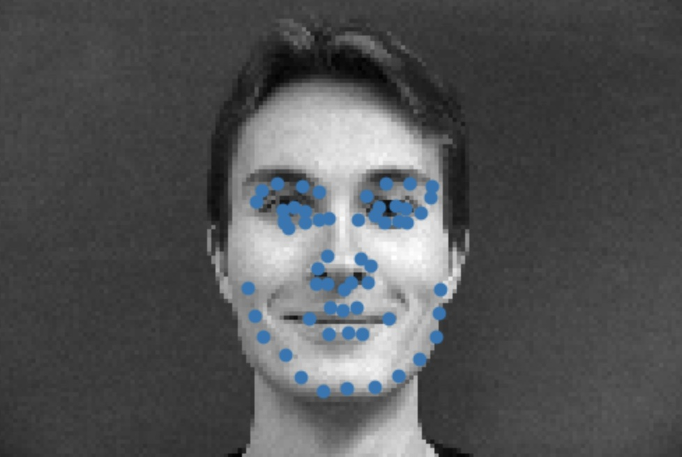
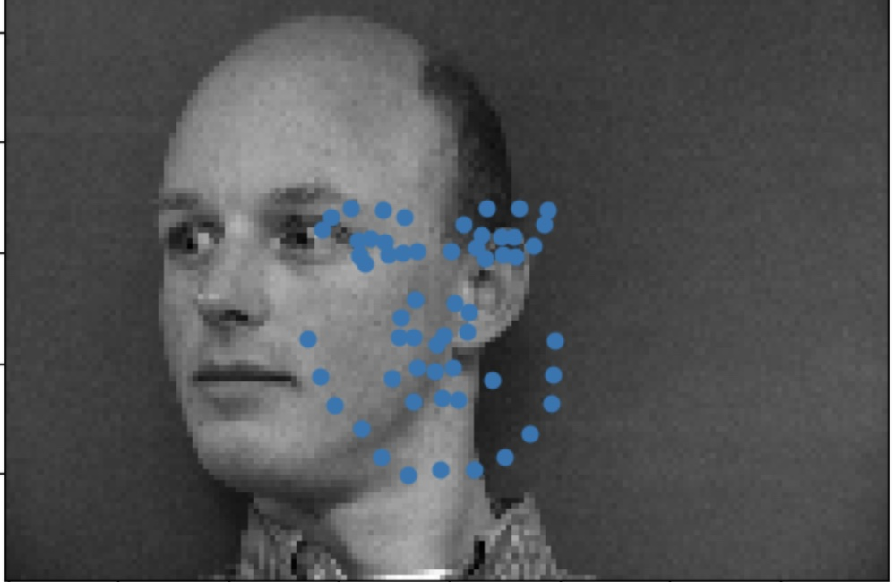
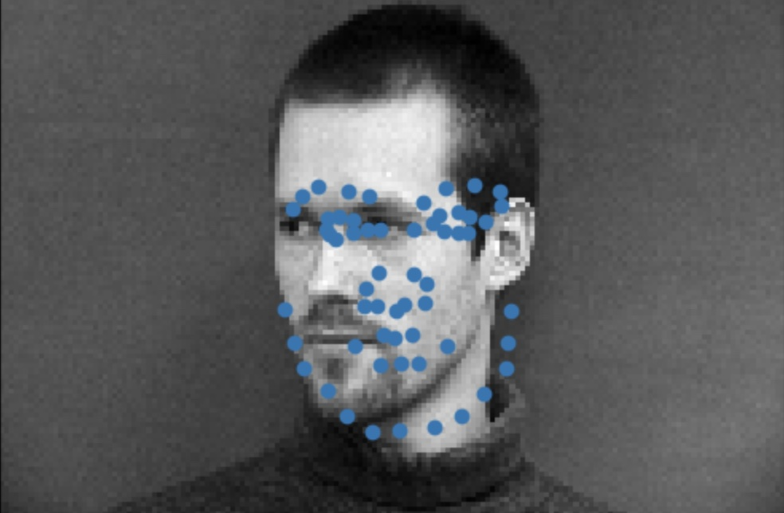

I used torch.utils.data.DataLoader to load and visualize my data. I used an 80/20 training/validation split. In this part, I resized the images to 60 x 80 and adjusted the landmarks accordingly. The landmark points
were given as ratios, so to plot the points we had to multiply the landmark by the height and width of the image. We also had to normalize the images to be between -0.5 and 0.5.
Create a neural network to predict nose keypoint:
I then trained a neural network to predict where the nose keypoint should land on images that were given labels. My model has three convolutional layers, each with a kernel size of 5. I followed each convolutional layer with a ReLU and max pooling layer. There were also two fully connnected layers at the end. I used MSE loss function and the Adam optimizer with a learning rate of 0.003.
This was my training/validation plot for the given learning rate:
I modified my learning rate to 0.005 and this was how my training curve changed:
The smaller learning rate of 0.003 made the loss plateau later, which is beneficial during the training process to minimize overfitting. I ran my model on some test images and the results are shown below. The red is the ground truth and the blue is my models predicted keypoint.
| Successful Examples |  |  |  |
| Failed Examples |  |  |  |
The model seemed to train better on front facing images. These were the vast majority of the training images, so this make sense. The network did not seem to learn how to plot the nose keypoints on faces that were off center.
In this section I also used torch.utils.data.DataLoader to load and visualize my data. I used an 80/20 training/validation split.
I instead resized the image to 120 x 160. I also had to normalize the images for this part as well. To increase the range of our test images
and prevent overfitting, I had to apply augmentations to the images such as flipping over the y-axis, adding random noise, translating the image,
and adding rotations. I used the imgaug library to do this.
Samples with ground truth landmarks:
Create a neural network to predict 58 face keypoints:
I then trained a neural network to predict where 58 face keypoints should land on test images that were given labels. My model has five convolutional layers, the first two with a kernel size of 5 and the last 3 with a kernel size of 1. I followed each convolutional layer with a ReLU and max pooling layer. There were also two fully connnected layers at the end, and the final output channel was 68*2 for each x and y coordinate. I used MSE loss function and the Adam optimizer with a learning rate of 0.003.
This was my MSE plot for a learning rate of 0.003.
| Successful Examples |  |  |
| Failed Examples |  |  |
My model did not seem to train the best on images that were not facing forward.
I also visualized the learned filters of the first layer of my neural network as seen below.

In this part, we use a larger face dataset which consisted of 6,666 training images to train a neural network to predict 68 face keypoints. Since the images were not all centered, we were given bounding boxes to crop the image for the training process and then resize the images to a 224x224 square. I also used the imgaug library to do augmentations on the training images to prevent overfitting. We also had to transform the labels accordingly.
Create a neural network to predict 68 face keypoints:
I then trained a neural network to predict where 68 face keypoints should land on test images that were given labels. I based my model off of ResNet-18 and only modified the first convolutional layer's input channels to 1, with a kernel size of 7, and stride of 2 and the last fully convolutional layer has 68*2 = 136 output channels. All intermediate layers of ResNet-18 were kept the same. I used MSE loss function and the Adam optimizer with a learning rate of 0.0001.
This is how my model predicted the keypoints on some of the test images:
This is how my model predicted the keypoints on some of my custom images:
In this part we turned the problem of predicting a keypoint location to the problem of predicting the likelihood of each pixel in the image being a keypoint. I did this my creating a custom dataset that outputed images and the labels as 68 images with a gaussian kernel placed at the keypoint. The 2-D Gaussian kernel I used had a kernel size of 17 and sigma of 3. Below is an example of the kernel I used and the accumulated heatmap.
I used the UNET model to base my model architecture after. The only thing I changed was the input channel number of the first convolutional layer to 1 and the last layer's output channels to 68 for the 68 heatmaps.

I trained my model for 15 epoch, which seemed to be the max I could do without my RAM maxing out and causing the kernel to crash.
Part 3 had my best model which was what I used for Kaggle. I got a Kaggle score of 11.87454 under my name.